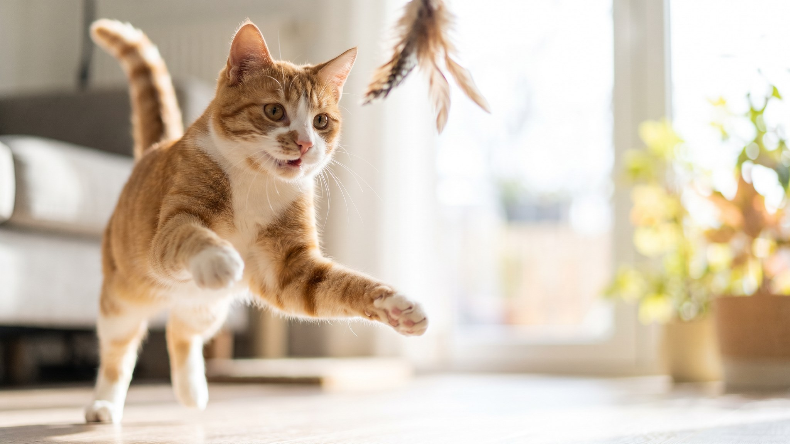

Кошка потёрлась мордочкой о букет лилий, и пыльца осела на шерсти. Это уже повод действовать, не ждать. Лилии относятся к растениям с самым высоким уровнем опасности для кошек — под угрозой даже вода из вазы. Разбираем, какие ещё растения несут риск, как переустроить дом и на какие тревожные сигналы обращать внимание.
🐾 Поставьте приложение заранее
Первая помощь, дневник здоровья и AI-ветеринар 24/7 — в одном месте. Бесплатно: установите, пока не понадобилось.
Установить AnimaLife → Открыть в MAX →
У вас iPhone? AnimaLife есть в App Store
Лилии (род Lilium и близкие к нему) занимают особое место среди растений, опасных для кошек. Опасны все части растения: лепестки, листья, тычинки, пыльца и даже вода, в которой стоял букет. Кошка может контактировать с токсинами при вылизывании шерсти, на которую попала пыльца, или просто попив из вазы.
Под угрозой прежде всего почки и их работа. Чем раньше кошка попадёт к ветеринару после контакта с лилией, тем лучше прогноз. Ждать появления выраженных изменений в состоянии не стоит.
Если кошка контактировала с лилией — немедленно к ветеринару, не ждите ухудшения состояния. Это один из тех случаев, когда счёт идёт на часы.
Лилии стоят особняком по уровню риска, но список растений, требующих осторожности, намного шире:
Проще убрать растения, чем контролировать кошку. Животное всегда найдёт способ добраться до интересного запаха, особенно ночью или когда хозяина нет дома.
Тревожные сигналы после контакта с любым из перечисленных растений: слюнотечение, рвота, вялость, отказ от воды и еды, прищуривание. Любой из этих сигналов — повод позвонить ветеринару и описать ситуацию, не откладывая.
При контакте с лилией — везти в клинику сразу, не ждать никаких сигналов. Запомните или сфотографируйте растение, с которым контактировала кошка: врачу важно понимать, с чем именно он имеет дело. Круглосуточная ветеринарная клиника при таких ситуациях предпочтительнее ожидания до утра.
🐾 Что делать, если что-то пойдёт не так
AnimaLife подскажет первые шаги при отравлении, травме, перегреве или укусе — ещё до того, как вы доедете до врача. Пусть будет под рукой.
Открыть первую помощь → Открыть в MAX →
У вас iPhone? AnimaLife есть в App Store
🐾 Понравился разбор?
Подпишитесь на канал — каждый день разбираем по одному тревожному симптому у кошек и собак: что в пределах нормы, а когда пора к врачу. Подпишитесь, чтобы не пропустить разбор, который может спасти здоровье вашего питомца.
Материал носит информационный характер и не заменяет очную консультацию ветеринара.